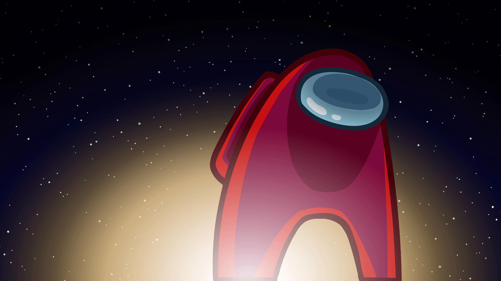

Among Us
Among Us je multiplayer društvena igra koju je razvila američka kompanija Innersloth i prvobitno objavila 2018. godine, ali je postala globalni hit tokom 2020. zahvaljujući popularnosti na Twitchu i YouTubeu. Igra se odvija u svemirskom okruženju gde igrači preuzimaju uloge članova posade (crewmates) ili varalica (impostors). Cilj posade je da izvrši zadatke po mapi i otkrije varalice, dok varalice sabotiraju misiju i eliminišu članove posade bez da budu otkriveni. Igra je zasnovana na dedukciji, obmani i timskoj komunikaciji, često rezultujući haotičnim, zabavnim raspravama i optužbama. Iako je jednostavna po mehanici, njen društveni aspekt čini je izuzetno zaraznom i pogodnom za sve uzraste.